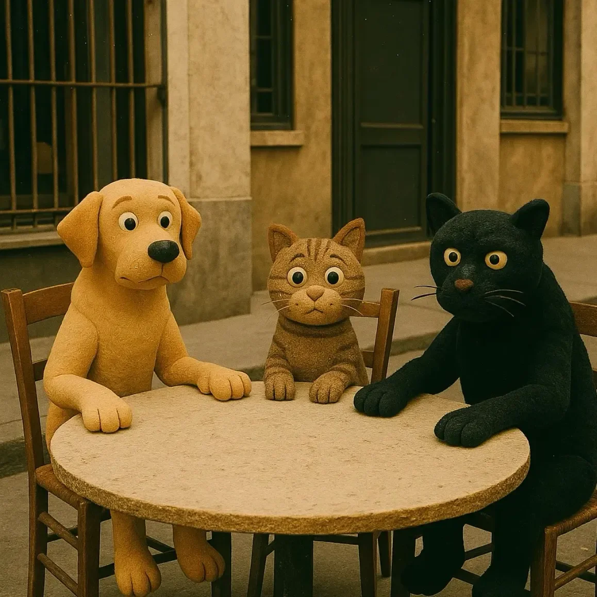

“좋아,” 브루노가 씩씩거리며 말했다. 그가 육중한 몸을 의자에 앉히자 카페 의자가 불평하듯 삐걱거렸다. “상황을 다시 짚어보자. 빵집 문은 이제 2층 창문이 되어버렸어. 듀보아 부인은 밧줄에 매단 양동이로 사람들에게 크루아상을 팔고 있고. 품위도 없고, 느려터졌고, 내 아침 페이스트리는 차갑게 식어 있었다고.”
[“Right,” Bruno huffed, the café chair groaning a complaint as he settled his weight. “Let’s review. The bakery door is now a second-story window. Mrs. Dubois is selling croissants to people via a bucket on a rope. It’s undignified, it’s slow, and my morning pastry was cold.”]
“그런데 아침 식사 온도가 가장 큰 문제라고 생각하는 거야?” 세이지가 정성스럽게 들어 올린 발 하나를 핥으며 물었다.
[“And you consider the temperature of your breakfast the primary issue?” Sage asked, meticulously cleaning one raised paw.]
“그건 시민 질서가 무너지고 있다는 더 큰 문제의 징후라고,” 브루노가 쏘아붙였다. “제때 따뜻한 크루아상 하나 제대로 내놓지 못하는 마을은 벼랑 끝에 선 마을이야. 신고서를 제출할까 심각하게 고민 중이라고.”
[“It is a symptom of the larger breakdown in civic order,” Bruno retorted. “A town that cannot deliver a timely, warm croissant is a town on the brink. I’ve half a mind to file a report.”]
“신고서? 누구한테 말이야, 브루노?” 세이지가 경멸이 뚝뚝 묻어나는 목소리로 물었다. “‘자발적이고 불편한 건축 위원회'에라도? 관료주의에 대한 네 믿음은 사랑스럽지만, 비극적으로 잘못됐어. 이건 서류 작업으로 해결될 문제가 아니야.”
[“A report? With whom, Bruno?” Sage inquired, her tone dripping with condescension. “The Committee for Spontaneous and Inconvenient Architecture? Your faith in bureaucracy is adorable, but tragically misplaced. This is not a problem of paperwork.”]
“깊이 파고들면 모든 게 다 서류 문제라고,” 브루노가 투덜거렸다.
[“Everything is a problem of paperwork if you dig deep enough,” Bruno grumbled.]
미드나잇이 세 번째 의자에 홀연히 나타났다. 황혼 속에서 갑자기 생겨난 한 조각의 밤 같았다. “저 애 말이 맞아. 신고할 사람이 아무도 없어. 이건 조잡한 차원 훼손 행위야. 우주적으로 보면 모나리자에 콧수염을 그려 넣는 것과 같은 짓이지.”
[Midnight blinked into existence on the third chair, a patch of sudden night in the dusk. “She’s right, you know. There’s no one to file with. This is shoddy dimensional vandalism. The cosmic equivalent of drawing a mustache on the Mona Lisa.”]
“그거에 대해 엄청 침착해 보이네,” 브루노가 말했다.
[“You seem awfully calm about it,” Bruno said.]
“지난 세기엔 리스본에서 시간 역전 현상이 있었지,” 미드나잇이 한숨을 쉬었다. 마른 잎사귀가 보도 위를 스치는 듯한 소리였다. “깔끔하고, 효율적이었어. 모두가 10년 동안 똑같은 화요일을 반복해서 살았을 뿐이야. 그건 품격이라도 있었는데. 이건 그냥… 지저분해.”
[“Last century, we had a temporal inversion in Lisbon,” Midnight sighed, a sound like dry leaves skittering on pavement. “Clean. Efficient. Everyone just relived the same Tuesday for a decade. That had style. This is just… messy.”]
향수 가게에서 풍겨오는 혼란스러운 라벤더 향을 실은 산들바람이 광장을 가로질러 와들와들 떨었다. 지친 한숨 같은 소리와 함께, 보석 가게 문이 문틀에서 떨어져 나왔다. 문은 잠시 공중에 떠 있다가, 거리를 따라 두둥실 흘러갔다.
[A breeze, carrying the scent of confused lavender from the perfumery, shivered across the square. With a sound like a tired sigh, the jewelry shop door detached itself from its frame. It hovered for a moment, then drifted down the street.]
“음,” 브루노가 몸을 일으키며 말했다. “저절로 따라가지는 않겠지.”
[“Well,” Bruno said, pushing himself up. “It’s not going to follow itself.”]
그들은 떠다니는 문을 뒤따라갔다. “꼭 저렇게 느리게 움직여야 해?” 첫 번째 블록을 지나자 브루노가 불평했다. “일부러 우리를 약 올리는 거야. 약 오르는 기분이라고.”
[They trailed the floating door. “Must it move so slowly?” Bruno complained after the first block. “It’s deliberately taunting us. I feel taunted.”]
“레이 라인을 피하고 있잖아,” 세이지가 냉정하게 말했다. “이걸 보면 마법 지형학에 대한 초보적인 이해는 있지만 미적 감각은 전무하다는 걸 알 수 있지. 마치 술 취한 사람이 타일 바닥의 줄눈을 따라 걸으려는 걸 보는 것 같아.”
[“It’s avoiding the ley lines,” Sage observed coolly. “This suggests a rudimentary understanding of magical topography but a complete lack of aesthetic sensibility. It’s like watching a drunkard try to follow the grout lines in a tiled floor.”]
“미드나잇, 뭐 좀 해볼 수 없어?” 브루노가 물었다. “슬쩍 밀어주기라도 하던가?”
[“Can’t you do something, Midnight?” Bruno asked. “Nudge it along?”]
“약한 차원의 닻에 묶여 있어,” 미드나잇이 조금도 흥미 없다는 듯이 설명했다. “내가 그걸 '슬쩍 밀면’, 실수로 담배 가게를 백악기 시대로 보내버릴지도 몰라. 또다시 말이야. 그때 서류 작업이 끔찍했거든.”
[“It’s tethered to a weak dimensional anchor,” Midnight explained without a hint of interest. “If I 'nudge’ it, I might accidentally send the tobacconist’s shop to the Cretaceous period. Again. The paperwork was dreadful.”]
문은 그들을 오래된 종탑으로 이끌더니 꼭대기 근처의 돌벽을 통과해 들어갔다. 안에서는 공기가 웅웅거렸다. 수십 개의 문이 불가능한 각도로 공간에 빽빽이 들어차 있었다. 혼돈의 중심에는 낡아빠진 코트를 입은 남자가 서 있었다.
[The door led them to the old bell tower and phased through the stone near the top. Inside, the air hummed. Dozens of doors were jammed into the space at impossible angles. At the center of the chaos stood a man in a threadbare coat.]
“앙리?” 브루노가 물었다.
[“Henri?” Bruno asked.]
남자가 돌아섰다. 그의 얼굴에는 너무나도 넓게 찢어진 미소가 걸려 있었다. “환영합니다! 깜짝 놀랐죠! 올 줄 알았어요. 계속 정리 정돈을 하고 있었답니다. 음, 제 방식의 정리 정돈이지만요. 제가 익숙한 비명 지르는 혼돈보다는 훨씬 낫지 않나요? 멋지다고 말해줘요.”
[The man turned, beaming a smile that was far too wide for his face. “Welcome! Surprise! I knew you’d come. I’ve been tidying up. Well, my version of tidying. It’s much nicer than the screaming chaos I’m used to, isn’t it? Say it’s nice.”]
“너는 앙리의 몸에 무단으로 들어앉은 초우주적 존재로군,” 세이지가 단호하게 말했다. “그리고 네 인테리어 디자인은 기본 기하학에 대한 모욕이야. 또한 '멋지다'는 주관적인 표현이며, 이 경우에는 사실적으로도 틀렸어.”
[“You’re a paracosmic entity squatting in Henri’s vessel,” Sage stated flatly. “And your interior design is an affront to basic geometry. Also, 'nice’ is a subjective descriptor that is, in this case, factually incorrect.”]
“그리고 생선 가게 문을 거꾸로 매달아 놨잖아,” 브루노가 손가락으로 가리키며 덧붙였다. “화요일쯤이면 이 탑 전체에서 상한 고등어 냄새가 진동할 거라고.”
[“And you’ve got the door to the fishmonger hanging upside down,” Bruno added, pointing. “The whole tower is going to smell of expired mackerel by Tuesday.”]
앙리의 모습을 한 그것이 웃었다. 찻잔이 담긴 가방을 떨어뜨리는 듯한 소리였다. “사소한 것들, 사소한 것들! 중요한 건, 제가 장소와 장소 사이의 공간에서 너무나 끔찍하게 외로웠다는 거예요. 말할 사람이 아무도 없었거든요! 그래서 생각했죠, 파티를 저한테 가져오면 어떨까? 우리 모두 최고의 친구가 될 거예요!”
[The thing wearing Henri laughed, a sound like a bag of dropped teacups. “Details, details! The point is, I’ve been so terribly alone in the place between places. No one to talk to! So, I thought, why not bring the party to me? We’re all going to be the best of friends!”]
브루노, 세이지, 그리고 미드나잇은 서로 시선을 교환했다. 그것은 지친 공감대로 귀결된, 조용한 3자 간의 대화였다.
[Bruno, Sage, and Midnight exchanged a look. It was a silent, three-way conversation that concluded in a shared, weary consensus.]
미드나잇은 아마도 이 비(非)공간의 핵심 구조물이 반짝이는 태피스트리 같은 변칙적인 물체 쪽으로 어슬렁거리며 다가가, 현실의 느슨한 올 하나를 툭툭 치기 시작했다.
[Midnight sauntered over to a shimmering, tapestry-like anomaly—likely a key structural element of this non-space—and began batting at a loose thread of reality.]
“지금 뭐 하는 거죠?” 그 존재가 비틀거리는 미소와 함께 물었다. “제발 그거 만지지 말아요.”
[“What are you doing?” the entity asked, its smile faltering. “Please don’t touch that.”]
“이거?” 미드나잇이 그 올을 사납게 잡아당기며 말했다. 방이 격렬하게 깜빡였다. “아, 아무것도 아니야. 그냥 이거 당기면 어떻게 되나 궁금해서. 내가 쉽게 지루해하는 편이라. 뭐 그런 게 있어.”
[“This?” Midnight said, giving the thread a vicious tug. The room flickered violently. “Oh, nothing. Just wondering what happens if I pull this. I get bored easily. It’s a whole thing.”]
브루노가 가죽 표지로 된 작은 수첩을 꺼냈다. “좋아,” 그가 관료적인 권위로 가득 찬 목소리를 울리며 선언했다. “친목 회의, 첫 번째 안건: 도시 계획.”
[Bruno pulled out a small, leather-bound notebook. “Right,” he announced, his voice booming with bureaucratic authority. “Friendship meeting, item the first: civic planning.”]
“친목 회의요?” 그 존재가 희망에 차서 물었다.
[“Friendship meeting?” the entity asked hopefully.]
“여기 당신의 공간 배치는 죽음의 덫이야,” 브루노는 그를 무시하고 말을 이었다. “두 번째 안건: 주거 구역 설정. 당신은 상업 시설인 빵집을 사적인 공간인 교회의 고해성사실 바로 옆에 배치했어. 방음 시설이 규정에 한참 미달하는 게 분명해. 세 번째 안건: 교통 흐름. 이 전체 배치는 보행자에게는 악몽이야. 비상 서비스 접근 계획은 어떻게 되지?”
[“Your spatial arrangement here is a death trap,” Bruno continued, ignoring him. “Item the second: residential zoning. You have the bakery, a commercial enterprise, directly adjacent to the confessional from the church, a private space. The sound insulation is clearly not up to code. Item the third: traffic flow. This entire layout is a pedestrian nightmare. What’s your plan for emergency service access?”]
“비상 서비스요? 하지만 여긴 아무 문제도 안 생긴다고요!” 그 존재가 명랑하게 말했다.
[“Emergency services? But nothing ever goes wrong here!” the entity chirped.]
“다들 그렇게 말하지,” 브루노가 심각하게 말했다. “유명한 마지막 말이야. 자, 이제 화재 진압 시스템에 관해서…”
[“That’s what they all say,” Bruno said gravely. “Famous last words. Now, about fire suppression systems…”]
“저 사람 말이 맞아,” 세이지가 앞으로 나서며 덧붙였다. “하지만 도시 문제는 네 더 깊은 문제의 증상일 뿐이야. 넌 사회 계약을 근본적으로 오해하고 있어.”
[“He’s right, you know,” Sage added, stepping forward. “But the civic issues are merely a symptom of your deeper problem. You’ve fundamentally misunderstood the social contract.”]
“제가요?” 그 존재가 훌쩍였다.
[“I have?” the entity whimpered.]
“동료애에 대한 너의 갈망이 강압을 통해 표현되고 있어,” 그녀가 서성거리기 시작하며 강의하듯 말했다. “이건 전형적인 애착 장애야. 간단한 긍정 확언 훈련부터 시작할 수 있겠지만, 내 생각엔 네 비물질적 존재의 근원적인 트라우마를 해소하려면 수년간의 집중 치료가 필요할 거야. 어머니라는 개념과의 관계부터 시작해 보자.”
[“Your craving for companionship is being expressed through coercion,” she lectured, beginning to pace. “This is a classic attachment disorder. We can start with some simple affirmation exercises, though I suspect we’ll need years of intensive therapy to unpack the foundational trauma of your non-corporeal existence. Let’s start with your relationship with the concept of a mother.”]
“어머니요? 저는 순수한 에너지로 이루어진 존재라고요! 어머니는 없어요!”
[“A mother? I’m a being of pure energy! I don’t have a mother!”]
“부정은 첫 번째 단계지,” 세이지가 동정적으로 말했다. “그게 어떤 기분이 드는지 말해봐.”
[“Denial is the first stage,” Sage said sympathetically. “Tell me how that makes you feel.”]
그 존재는 멍하니 바라보았다. 그들의 말이 이어질 때마다 넓었던 미소가 점점 줄어들었다. 브루노는 이제 제안된 하수도 시스템의 설계도를 그리고 있었다. 미드나잇은 현실의 올에 싫증이 나, 그 존재가 가장 아끼는 것으로 보이는 문, 해변의 일몰 기억이 내다보이는 문을 찾아내 발톱을 갈고 있었다. 긁는 소리가 작은 공간 안에서 끔찍하게 울려 퍼졌다.
[The entity stared, its wide smile shrinking with every word. Bruno was now sketching a diagram for a proposed sewer system. Midnight, having grown tired of the reality thread, had found the entity’s apparent favorite door—one that looked out onto a memory of a seaside sunset—and was now sharpening his claws on it. The scraping sound echoed horribly in the small space.]
“그만해! 그건 안 돼!” 그 존재가 비명을 질렀다. “그건 오래된 해변 오두막의 문이란 말이야! 그 기억에는 사랑스러운 고풍스러움이 깃들어 있다고!”
[“Stop that! Not that one!” the entity shrieked. “That’s the door from the old seaside cottage! The memory has a lovely patina!”]
“그리고 이 나무는 사랑스럽게 잘 쪼개지는 질감을 가졌군,” 미드나잇이 말했다. “그러고 보니, 거의 한 시간 동안 아무것도 못 먹었네. 우유 한 접시가 필요해. 응축된 시간의 힌트가 살짝 가미된 걸로.”
[“And the wood has a lovely, splintery texture,” Midnight commented. “Which reminds me, I haven’t been fed in almost an hour. I require a saucer of milk. Preferably with a hint of condensed time in it.”]
“그만! 모두들, 제발 그만해!” 그 존재가 앙리의 귀를 두 손으로 막으며 소리쳤다. “배관이랑 트라우마 얘기 좀 그만하라고! 그리고 너,” 그것이 미드나잇에게 떨리는 손가락을 겨누며 말했다, “내 기억 좀 그만 파괴해!”
[“Stop! All of you, just stop!” the entity screamed, holding its hands over Henri’s ears. “Stop talking about plumbing and trauma! And YOU,” it pointed a trembling finger at Midnight, “stop destroying my memories!”]
“그럼 문들을 돌려보내,” 브루노가 고개도 들지 않고 말했다. “그러면 우리도 멈출게.”
[“Then send the doors back,” Bruno said without looking up. “And we’ll stop.”]
“알았어! 그냥 가! 나를 내버려 둬! 차라리 혼자인 게 이것보단 나았어! 당신들이 오기 전에는 내 혼돈도 질서가 있었다고!”
[“Fine! Just go! Leave me alone! The solitude was better than this! My chaos was organized before you got here!”]
우주적인 짜증이 터지는 듯한 소리와 함께, 모여 있던 문들이 종탑 밖으로 튀어나갔다. 문들은 하나씩 제자리에 쾅 하고 들어맞았다. 앙리의 코트 속에 있던 존재는 깜빡이다가 사라져 버렸고, 바닥에는 빈 코트만이 쓰러져 내렸다.
[With a sound like a universal tantrum, the collected doors shot out of the tower. One by one, they slammed into their rightful places. The entity in Henri’s coat flickered and dissolved, leaving only an empty coat to collapse on the floor.]
다음 날 아침, 세 사람은 늘 앉던 테이블에 앉아 있었다. 브루노의 페이스트리는 따뜻했다.
[The next morning, the trio sat at their usual table. Bruno’s pastry was warm.]
“자, 최종 집계를 해보자면,” 세이지가 우아하게 크림을 한 모금 마시며 생각에 잠겼다. “시 규정, 불청객 같은 정신분석, 그리고 고양이의 공격성이 합쳐진 위협에 의해 격퇴된 초우주적 존재 하나.”
[“So, the final tally,” Sage mused, taking a delicate sip of cream. “One cosmic entity repelled by the combined threat of municipal code, unsolicited psychoanalysis, and feline belligerence.”]
“난 그래도 비상구에 대한 내 지적이 결정적이었다고 생각해,” 브루노가 크루아상을 입에 가득 넣은 채 말했다. “안전이 우선이지.”
[“I still think my point about the fire exits is what really sold it,” Bruno said through a mouthful of croissant. “Safety first.”]
“아마추어 같으니,” 미드나잇이 비웃었다. “내가 녀석이 가장 아끼는 기억의 문을 위협하자마자 바로 무너지더군. 예상대로야. 이제 실례하지, 저 햇살 속의 의자가 저절로 낮잠을 자 주진 않을 테니.”
[“Amateur,” Midnight scoffed. “He folded the moment I threatened his favorite memory-portal. Predictable. Now, if you’ll excuse me, that chair in the sunbeam won’t nap in itself.”]